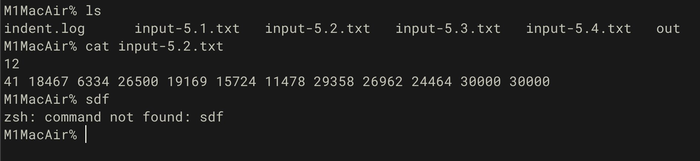
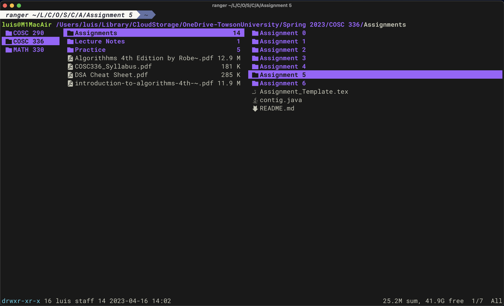

Terminal: Friendlier than it seems
It’s 2023. Why do terminals still exist?
Terminals are awkward, scary and old. Are you trying to be a try hard?
No.
Learning how to use the command line opens up a new avenue to using computers.
Automation
You can easily automate manual tasks with text compared to clicking buttons around
The power to chain commands together is so powerful, people get paid to do it 😎
No GUI? No problem
If you want to use a remote server that a cloud platform provides, interacting with the command line is optimal because sending graphics over the internet can be pretty slow.
Fun!
You don’t want to miss out on some cool open source projects
Many of those applications do not come with a GUI
Blazingly fast 🚀

She sells sea shells by the sea shore
A shell is the program that interprets the commands that you input. By default,
| OS | Default shell |
|---|---|
| MacOS | zsh |
| Windows | powershell |
| Linux | bash (varies by distro) |
Frameworks everywhere
Popular shells, such as zsh have frameworks that can add some pizazz to your shell.
Turn your shell from this

To this

with oh-my-zsh
Alternative shells
The following are alternative shells:
Basic navigation
ls- Used for listing files in a directory to see what’s there
- Without an argument: Prints out the files within the current directory
- With an argument: Prints out the files within the argument directory
cd- Stands for “change directory”
- Move around directories
Working with files
mv- Move or rename a file
cat- Output the contents of a file
touch- Create a file
rm- Delete a file
What are flags?
Flags modify how a program behaves.
ls
When you pass a -a flag to ls, it will also include hidden files, A.K.A dotfiles since they start with dots


rm
- If you want to delete a directory, you’ll have to pass the
-rkeyword - If you certainly want to delete a directory, pass the
-rfkeyword.
But reading through the manual is exhausting 😫

But
Before you copy paste and run the command, be sure it’s not a troll and you have some basic understanding of the flags provided.
For some commands, such as git, there is an option called dry-run that tells you what would happen but not actually do it.
Kind of like a sandbox
$ bash -n <script>
Perfect combo!
The | (pipe) operator allows you to perform some interesting combos with commands.
Another operator, > (redirect) allows you to redirect the output of the command somewhere else.
Making (crappy) code aesthetic
$ cat exercise_4.py | lolcat -a -s 60

A more practical example…
Your significant other gets mad at you if you don’t send them a “Good morning” text every morning, precisely at 7:00 AM. with a compliment.
With the power of automation, you can easily do so!
The script
-- Taken from: https://stackoverflow.com/questions/11812184/how-to-send-an-imessage-text-with-applescript-only-in-provided-service
on run {targetBuddyPhone, targetMessage}
tell application "Messages"
set targetService to 1st service whose service type = SMS
set targetBuddy to buddy targetBuddyPhone of targetService
send targetMessage to targetBuddy
end tell
end run
Package managers
Installing applications from this:

To this

What’s a package manager
A package manager downloads, installs, uninstalls and automagically configures your system to be able to run the command that you want to install.
Examples of languages that use package managers
| Language | Package manager |
|---|---|
| Python | pip |
| JavaScript | yarn or npm |
| Rust | cargo |
| Go | go modules |
Windows
Disclaimer: I don’t main Windows

- Scoop
- Installs packages within the current user’s directory so it doesn’t pollute the system path
- My preferred package manager for windows
- You don’t have to be an elevated user
- Chocolatey
- Has more packages than Scoop
- Elevated user required
- Winget
- Official Windows package manager
MacOS
Linux
- Depends on the distribution, but here’s a few examples
| Distro | Package manager |
|---|---|
| Arch based | pacman |
| Debian based | apt |
| Fedora | yum |
How to make the terminal more aesthetic and awesome
CLI applications are highly configurable to suit your needs.
Warning: The rabbit hole of customization is a deep one

Alternatives to common commands
cd at the speed of your thoughts
Using cd to go to places takes too long 😫
I introduce…
cd in style
ranger is a great TUI file manager with vi keybinds and file previews
Custom Prompts
- Starship
- Provides convenient information depending on the context of your current directory
 When it sees a .java file, it prints 💩
When it sees a .java file, it prints 💩
An alternative terminal emulator
Default terminal emulators can get the job done but there are free alternatives that can enhance the terminal experience.
Some terminal emulators are cross-platform, which is nice if you want to keep the same configuration across different systems.
Windows
If you haven’t upgraded to Windows 11, then the Windows Terminal is amazing.
- Tab and window splitting out of the box for multi tasking
- GPU accelerated
- Easily switch between WSL2 and PowerShell
- Intuitive configuration
MacOS
My daily driver at the moment is kitty. I love it for the following reasons:
- GPU accelerated
- Built-in tabs and splits. No need for tmux, but it’s a terminal multiplexer that I highly recommend.
- Ligature and emoji support
Linux
Notable ones that I’ve used in the past
Text editors
Checkout r/unixporn for inspirations

Trivia

Have my money Mr. Tim Cook
You just bought a brand new 14“ Macbook Pro with an M2 Pro, 32GB Unified Memory, and 1TB SSD Storage 😍
What shell does it ship with?
- bash
- Powershell
- fish
- zsh
- Just run
echo $SHELL🤷
Busted
You have 5 seconds to delete all .mp4 files from your ’homework’ folder before your parents take your laptop but you also don’t want to delete your actual homework.
What do you do?
- Sort by file type, select the correct range, right click, then hit delete and pray you got all of it
- 🗿Press play at max volume🗿
rm *.mp4touch *.mp4
Where did I save it?
After toiling away for days, you finish your data structures assignment 1 hour before it’s due. You close the hundred of tabs that you used to research for the solution. You admire your elegant recursive solution. You save all your files and you close your editor. You happily go to blackboard to upload the files but it’s not at the usual spot.
What do you do?
- Manually look through your files one by one with
cat. - Use either
fdorfindcommand. - Ask ChatGPT to redo the assignment for you.
- Call it a day because GPA doesn’t matter.
Just copy paste?
You want to save the error output of your program to a file but it’s \(\left({{\sum\limits_{k=0}^\infty {\left({2 \over {3}}\right)^{k}}} - (\cos^2x + \sin^2x)}\right) \times {{-4e^{\pi i}}} + {\sum\limits_{k=0}^\infty {\left({1 \over {2}}\right)^{k}}}\) lines long.
What do you do?
- Type each character one by one.
- Scroll through your text editor’s terminal and copy it.
./program > error.log./program | error.log
Getting ready for class
On the first day of your programming class, your professor asks you to install Java but they make you remotely log in to a Debian Linux server on campus and it doesn’t have a GUI. What command do you enter?
scoop install javaapt install javabrew install javapacman -Syu java